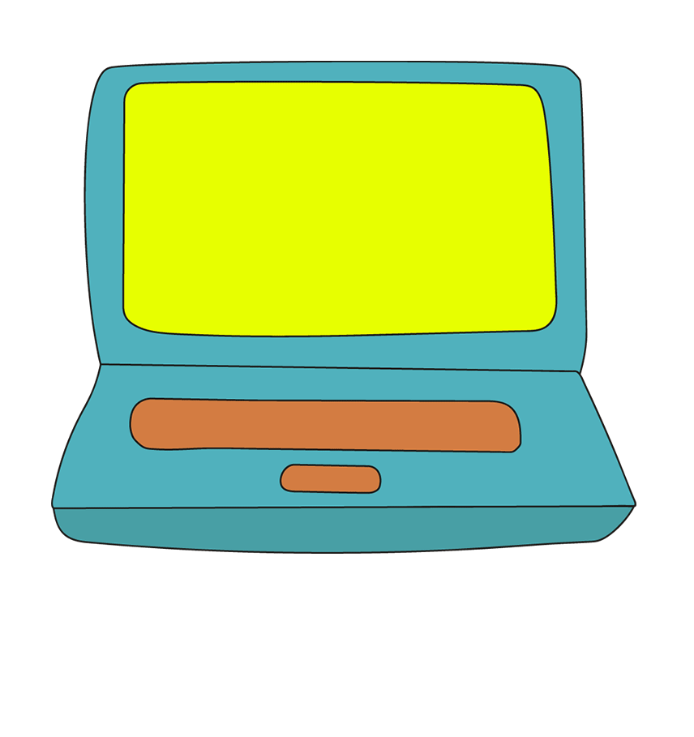

<!DOCTYPE html>
<html>
<head>
  <meta charset="UTF-8">
  <meta http-equiv="X-UA-Compatible" content="IE=edge">
  <meta name="generator" content=" v4.3.5, .com">
  <meta name="viewport" content="width=device-width, initial-scale=1">
  <link rel="shortcut icon" href="assets/images/favicon.png" type="image/x-icon">
  <meta name="description" content="Animation Artist (Focus on (experimental) 2D-Animation and Visuals) - Berlin area, Germany">
  <title>Anna Lea Schmitt - Motion Designer</title>
  <link rel=”canonical” href=”http://aelnaan.com” />
  <link rel=”canonical” href=”http://annaleaschmitt.com” />
  <link rel=”canonical” href=”http://annaleaschmitt.de” />
  <link rel=”canonical” href=”http://aelnaan.de” />
  <meta name=”robots” content=”index, follow”>

  <link rel="stylesheet" href="assets/tether/tether.min.css">
  <link rel="stylesheet" href="assets/bootstrap/css/bootstrap.min.css">
    <link rel="stylesheet" href="assets/bootstrap/css/bootstrap-grid.min.css">
    <link rel="stylesheet" href="assets/bootstrap/css/bootstrap-reboot.min.css">
    <link rel="stylesheet" href="assets/socicon/css/styles.css">
  <link rel="stylesheet" href="assets/theme/css/style.css">
  <link rel="stylesheet" href="assets/custom/css/additional.css" type="text/css">
  <!-- <script type="text/javascript" src="assets/instafeed/instafeed.min.js"></script> -->
</head>
<body>
<section style="padding-top: 30px;">
    <div class="container col-md-8 align-center">
        <style>.embed-container { position: relative; padding-bottom: 56.25%; height: 0; overflow: hidden; max-width: 100%; border-radius: 5px;} .embed-container iframe, .embed-container object, .embed-container embed { position: absolute; top: 0; left: 0; width: 100%; height: 100%; }</style>
        <div class='embed-container'>
            <iframe src='https://www.youtube.com/embed/lJ6WxollhgI?rel=0&autoplay=1' frameborder='0' allowfullscreen></iframe>
        </div>
    </div>
</section>
<section  class="cid-qyuZH0oPRJ" id="social-buttons2-f" data-rv-view="188">
    <div class="container">
        <div class="media-container-row">
            <div class="col-md-12 align-center">
                <!-- <h2 class="pb-3 mbr-fonts-style display-2">
                  currently under construction
                </h2> -->
                <div class="social-list pl-0 mb-0">
                    <a style="margin-right: 20px;" href="https://vimeo.com/annaleaschmitt" target="_blank">
                        <span class="px-2 socicon-vimeo socicon mbr-iconfont mbr-iconfont-social" media-simple="true"></span>
                    </a>
                    <a style="margin-right: 20px;" href="https://www.instagram.com/aelnaan/" target="_blank">
                        <span class="px-2 socicon-instagram socicon mbr-iconfont mbr-iconfont-social" media-simple="true"></span>
                    </a>
                    <a style="margin-right: 20px;" href="https://www.linkedin.com/in/anna-lea-schmitt-9ba51a160" target="_blank">
                        <span class="px-2 socicon-linkedin socicon mbr-iconfont mbr-iconfont-social" media-simple="true"></span>
                    </a>
                    <a style="margin-right: 20px;" href="mailto:hallo@aelnaan.com">
                        <span class="px-2 socicon-google socicon mbr-iconfont mbr-iconfont-social"
                        media-simple="true">
                        </span>
                    </a>
                </div>
            </div>
        </div>
    </div>
</section>
<section>
    <!--  -->

</section>
<!-- https://github.com/stevenschobert/instafeed.js -->
<!-- https://elfsight.com/blog/2015/10/get-instagram-client-id-guide/ -->
<!-- https://github.com/adrianengine/jquery-spectragram/wiki/How-to-get-Instagram-API-access-token-and-fix-your-broken-feed -->
<!-- https://github.com/stevenschobert/instafeed.js/issues/345 -->
<!-- https://github.com/stevenschobert/instafeed.js/issues/368 -->
<!-- <section> <div id="instafeed"></div> </section>
<script type="text/javascript">
    var feed = new Instafeed({
        get: 'user',
        userId: '15916083',
        accessToken: '15916083.e17104f.6d837bb26e6142a5a1f3453375646f3f'
    });
    feed.run();
</script> -->

  <script src="assets/web/assets/jquery/jquery.min.js"></script>
  <script src="assets/popper/popper.min.js"></script>
  <script src="assets/tether/tether.min.js"></script>
  <script src="assets/bootstrap/js/bootstrap.min.js"></script>
  <!-- <script src="assets/dropdown/js/script.min.js"></script> -->
  <script src="assets/touch-swipe/jquery.touch-swipe.min.js"></script>
  <script src="assets/social-likes/social-likes.js"></script>
  <script src="assets/theme/js/script.js"></script>
</body>
</html>